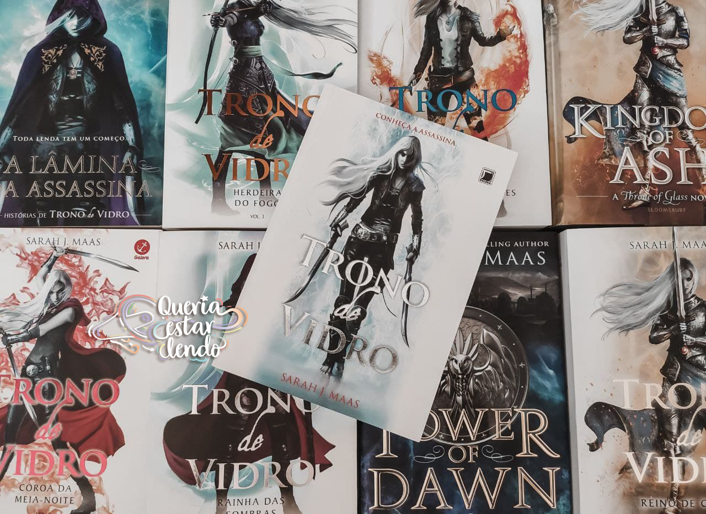
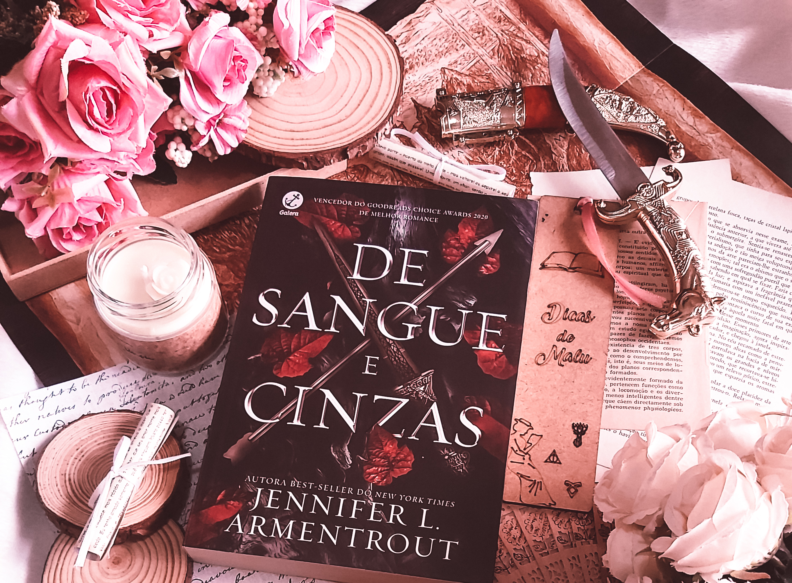
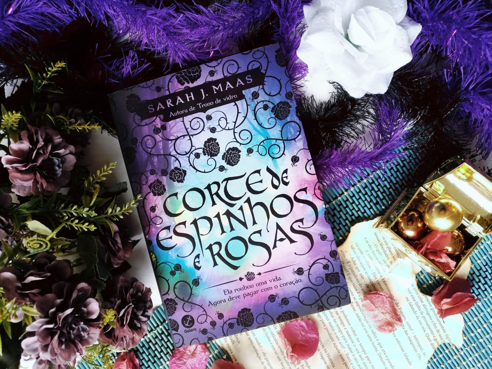

Coleção Trono de Vidro

A coleção de livros "Trono de Vidro" é uma série de fantasia escrita pela autora Sarah J. Maas. A história
se passa em um mundo de reinos, magia e intriga política, e gira em torno da protagonista Celaena
Sardothien, uma assassina mortal que se vê envolvida em uma competição para se tornar a campeã do rei.
Ao longo dos livros, acompanhamos a jornada de Celaena enquanto ela enfrenta desafios, descobre segredos
obscuros e luta contra forças poderosas que ameaçam seu mundo. A autora cria um universo rico e complexo,
repleto de personagens cativantes e reviravoltas emocionantes.
A série "Trono de Vidro" combina elementos de fantasia, ação, romance e mistério de maneira habilidosa,
criando uma narrativa envolvente que prende a atenção do leitor. Os livros exploram temas como lealdade,
coragem, redenção e sacrifício, além de abordar questões mais profundas sobre identidade, poder e justiça.
Com uma escrita envolvente e uma trama cheia de reviravoltas, a coleção "Trono de Vidro" conquistou uma
base de fãs dedicados ao redor do mundo. Se você é fã de fantasia épica, com personagens complexos e um
enredo cheio de ação, certamente encontrará essa série cativante e emocionante.
Coleção De Sangue e Cinzas

A coleção de livros "De Sangue e Cinzas" é uma fascinante saga escrita por Jennifer L. Armentrout. Misturando
elementos de fantasia, romance e ação, essa série nos transporta para um mundo repleto de segredos, traições e
poderes ocultos.
Prestes a completar 19 anos, Poppy se prepara para sua Ascensão. Quer dizer, Poppy é preparada para sua
Ascensão, já que, como tudo mais em sua vida, ela não tem opção senão Ascender. Sendo a Donzela, ela será
entregue aos deuses de qualquer forma, seja lá o que isso signifique.
Destinada a salvar Solis dos Atlantes, que amaldiçoaram o reino com a criação dos terríveis Vorazes, Poppy
não entende o que está por vir e nem sabe se está pronta para ser entregue aos tais deuses ou, ainda, se
sequer deseja fazê-lo.
Privada de todas as escolhas, sendo inclusive obrigada a cobrir o rosto com um véu e impedida de conversar
com qualquer pessoa além de uma dama de companhia designada pela Corte, Poppy leva uma vida solitária. Mas o
que ela quer mesmo é lutar ao lado dos guardas e conseguir se proteger das criaturas que ameaçam o reino, as
mesmas que mataram seus pais. Com um aliado secreto e uma habilidade rara, Poppy tem um vislumbre da vida que
poderia ter se fosse livre do fardo de ser a Donzela.
Mas com a entrada de Hawke Flynn em sua vida, o mundo de Poppy vira de cabeça para baixo e ela corre o risco
de ser arrebatada por tudo o que sempre lhe disseram ser proibido. Lançada em uma intrincada rede de mentiras,
traições e desejo, ela vê todas as suas certezas começarem a ruir. Qual será o lado certo da história? E será
que há mesmo um lado certo? Em meio a tantas reviravoltas e dilemas, o futuro de Poppy está cada vez mais
incerto e perigoso, e a vida de dois reinos está em suas mãos.
Coleção Corte de Espinhos e Rosas

"Corte de Espinhos e Rosas" é uma emocionante e envolvente coleção de livros escrita por Sarah J. Maas.
Ambientada em um mundo fantástico repleto de magia, criaturas sobrenaturais e uma batalha iminente, a série
narra a jornada da jovem Feyre Archeron.
Feyre é uma caçadora habilidosa que vive em um mundo dividido entre humanos e feéricos. Quando ela
acidentalmente mata um feérico, sua vida muda completamente. Ela é levada para o reino mágico chamado Corte
Primaveril e se torna prisioneira de Tamlin, um poderoso feérico com um passado misterioso.
À medida que Feyre descobre mais sobre o mundo feérico, ela se vê envolvida em uma teia de intriga
política, segredos antigos e ameaças mortais. Ao longo da série, ela enfrenta desafios, perigos e lutas
internas, desenvolvendo habilidades mágicas e descobrindo o verdadeiro poder que possui.
Além da trama repleta de ação e reviravoltas, "Corte de Espinhos e Rosas" também aborda temas como amor,
lealdade, sacrifício e superação. Os personagens são complexos e cativantes, com personalidades marcantes e
motivações bem desenvolvidas. O romance presente na história também é uma parte importante, trazendo
momentos de intensidade e emoção.
Sarah J. Maas cria um mundo rico e detalhado, com descrições vívidas e uma escrita envolvente que
transporta os leitores para essa realidade mágica. A narrativa é cheia de suspense e emoção, mantendo o
leitor ansioso para descobrir o que acontecerá a seguir.
"Corte de Espinhos e Rosas" é uma série que conquistou fãs ao redor do mundo, sendo aclamada por sua trama
envolvente, personagens cativantes e universo fascinante. Se você busca uma história de fantasia cheia de
aventura, romance e reviravoltas emocionantes, essa coleção de livros é uma escolha imperdível.
Coleção Não pare
Para se sentir vivo, você entregaria sua vida nas mãos da morte?Nina Scott não suportava mais a vida nômade e solitária que sua mãe, Stela, a obrigava a ter. Mudar de cidade ou de país a cada piscar de olhos, conviver com tantas perguntas que a consumiam, assombrada por mistérios de um passado guardado a sete chaves.
Agora, aos 16 anos, a garota das estranhas pupilas verticais exigia respostas.E, para sua péssima sorte, elas já estavam a caminho!Quando Stela decide ficar em Nova York, Nina acredita que seu sonho de ter uma vida normal vai se tornar realidade. Finalmente terminará o ano letivo em um mesmo colégio, poderá fazer amigos sem ter que abandoná-los em seguida, viver um grande amor, amadurecer, criar raízes... Enfim, curtir a juventude.
Mas o “normal” está muito longe da vida de Nina!Perdida no olho de um furacão de mortes e inexplicáveis acidentes, tendo que esconder os terríveis fatos da mãe paranoica, Nina começa a desconfiar da própria sanidade mental, de tudo e de todos.
A O que explicaria os paralisantes calafrios, a perda de visão e de memória que experimentava sempre que alguém morria ao seu redor? O que ela teria a ver com os bizarros e sobrenaturais acontecimentos? Estariam eles interligados?Seria a Morte sua companheira para toda a vida?É chegada a hora da verdade.